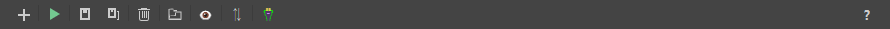
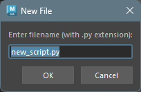

ツールバー
概要
ツールバーは、ファイルの作成や保存、コードの実行などの主要なアクションに素早くアクセスできます。

機能説明
 Toggle File Explorer
Toggle File Explorer
- ファイルエクスプローラーの表示/非表示を切り替えます。
 Create New File
Create New File
- 新しいファイルを作成します。
クリックすると、ファイル名を入力するダイアログが表示されます。

- ファイル名を入力して「OK」をクリックすると、新しいファイルが作成され、タブが開きます。
 Run Code
Run Code
- 現在アクティブなエディタのコードを実行します。
コードを選択している場合は、選択部分のみが実行されます。
Save Current File
- 現在アクティブなエディタの内容を保存します。
保存されていない変更がある場合、タブにアスタリスク (*) が表示されます。
Save All Files
- すべての開いているエディタの内容を保存します。
Clear Console
コンソールの内容をクリアします。
 Open Root Directory
Open Root Directory
- ワークスペースのルートディレクトリを OS 標準のファイルエクスプローラーで開きます。
 Swap Editor/Terminal
Position
Swap Editor/Terminal
Position
- コードエディタとターミナルの位置を上下に入れ替えます。
ショートカットキー
ツールバーの各アクションには、以下のショートカットキーが割り当てられています。
| アクション | ショートカットキー |
|---|---|
| Create New File | Ctrl+N |
| Run Code | Ctrl+Shift+Enter, Numpad |
| Save Current File | Ctrl + S |
| Save All Files | Ctrl + Shift + S |